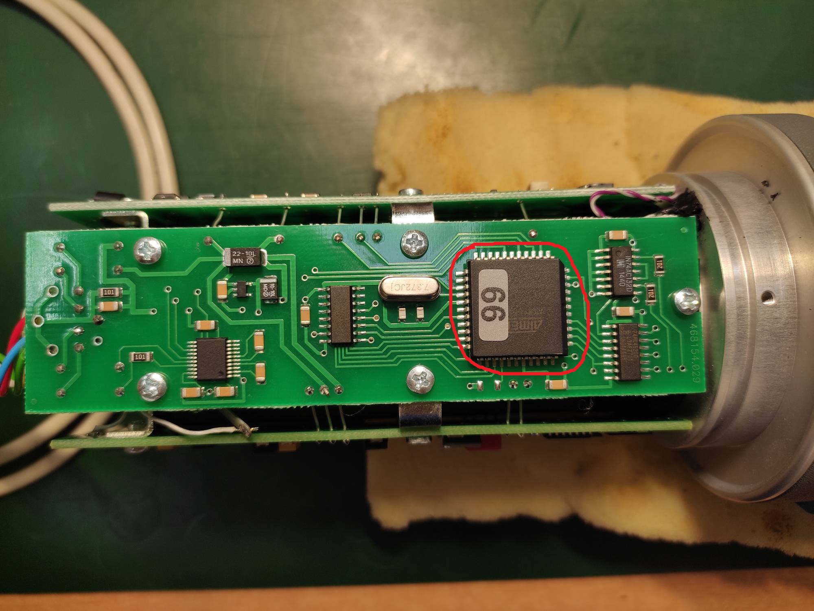
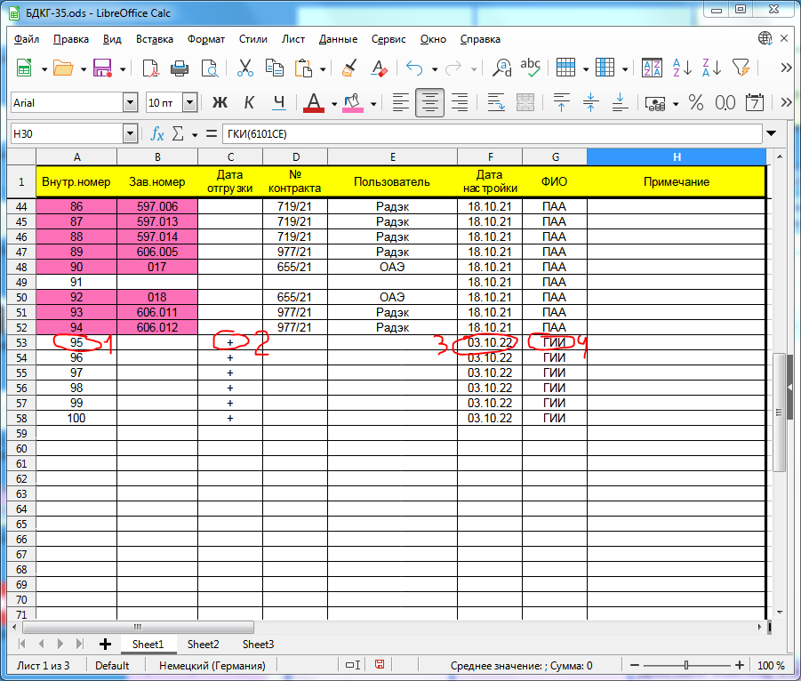
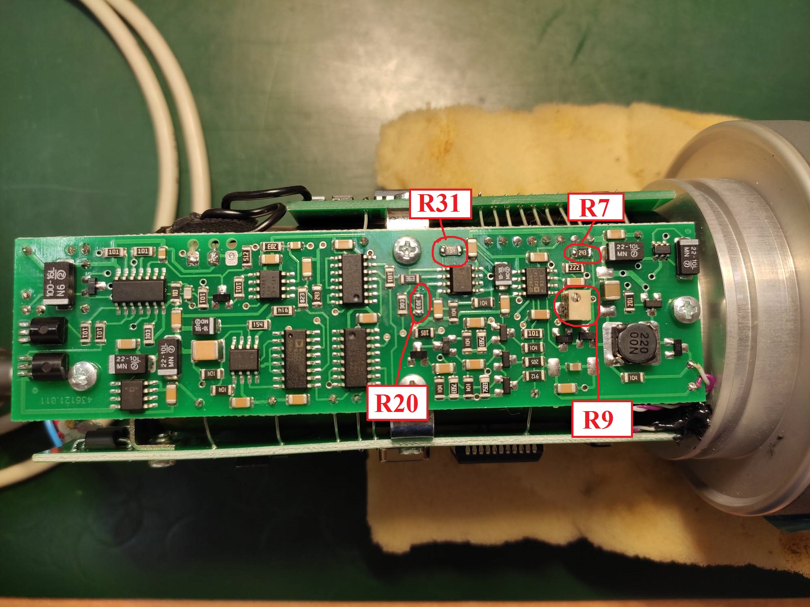
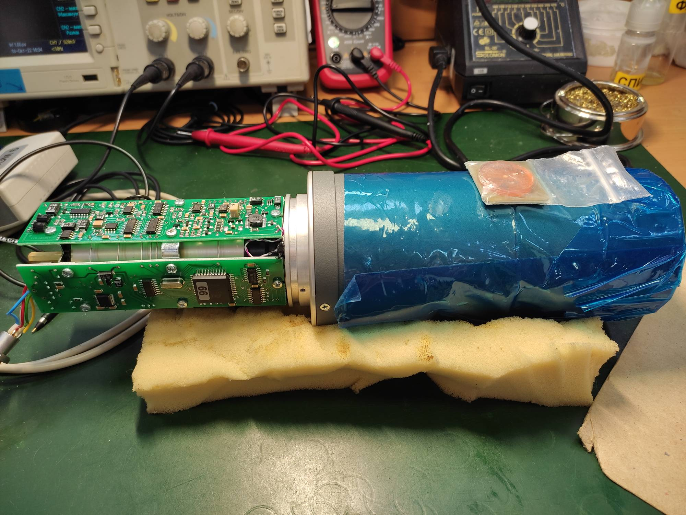
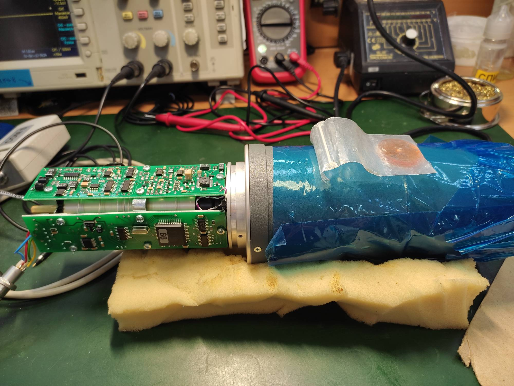
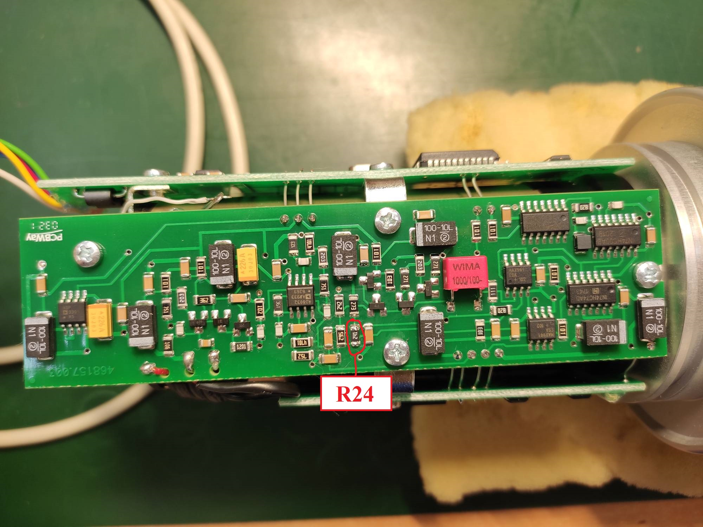

Настройка БДКГ-35
ОБРАТИТЬ ВНИМАНИЕ на плату усилителя-преобразователя импульсов (ТИАЯ.468157.003). Если плата 7-ой печати (на
нижней стороне платы есть номер, смотреть после "-"), то в зависимости от принципа работы:
- при работе со светодиодом АЛ102В выпаять конденсатор (1);
- при работе на двух-светодиодной схеме выпаять резистор (2);
- Изначально БД приходят прошитые либо как БДКГ-04, либо не прошитые вообще. Перепрошить/прошить в зависимости от используемого процессора/процессорной платы: ED2 и LPC11U67
- Приклеить наклейку с номером на процессор. 
- В электронный перечень записать внутренний номер (1), поставить "+" в графе "Дата отгрузки" (2), дату настройки (3) и ФИО (4). 
- Заполнить базу настройки в соответствии с требуемыми параметрами:
- Проверить на плате преобразователя напряжения номиналы резисторов R20 и R31: если они 20 кОм и 330 кОм соответственно, то будет выбивать ошибку "Авария высоковольтной лини" или "Авария светодиодной стабилизации" при превышении амплитуды Uвыс > 80 В. Желательно изначально перепаять их на номиналы 30 кОм и 150 кОм соответственно. 
- Подключить БД к ПК посредством адаптера USB-БД и запустить ПО "Background calibration".
- Проверить ток потребления (не более 30-40 мА в зависимости от процессора).
- Записать идентификационные данные.
- Проверить наличие счёта (не более 500 cps, если больше или постоянно сбрасывает - возможен косяк сборки (проникает свет), отдать на пересборку) и отсутствие ошибок.
- Поставить на приработку на 100 часов (это общее время приработки, его можно разбивать на половину и производить настройку, а позже уже доприрабатывать).
- Подключить БД к ПК посредством адаптера USB-БД и запустить ПО "Background calibration".
- Установить на плате преобразователя напряжения резисторами R7 и R8 показания от ОСГИ 137Cs и зафиксировать их в базу настройки:
- Установить на плате усилителя-преобразователя импульсов резистором R24 и (если будет недостаточно) на плате преобразователя напряжения резисторами R7 и R8 показания от ОСГИ 241Am и зафиксировать их в базу настройки:
- Проконтролировать показания на фоне (не более 400 cps) и записать в базу настройки.
- Записать номиналы резисторов R7 (плата преобразователя напряжения) и R24 (платы усилитель-преобразователя) в базу настройки.
- Проконтролировать напряжения на R8 и записать в базу настройки.
- Проконтролировать напряжение на выходе операционного усилителя D4.1 (плата преобразователя напряжения) и записать в базу настройки.
- Проконтролировать напряжение пробоя светодиода и записать в базу настройки.
- Проконтролировать Uвысокое (не более 85 В) и записать в базу настройки.
- Отдать БД на сборку.
- Отдать БД на линейку.
- Если БД прошли линейку — отдать на термокамеры.
- Если БД прошли термокамеры — отдать на проверку на светозащиту. После прохождения на корпусе БД должна быть наклейка и пометка в базе настроек.
- После получения контракта, где используются БДКГ-35 — отдать на окончательную сборку.

Ошибка загрузки

Ошибка загрузки

